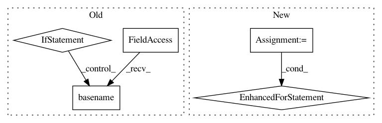

5f54d410357d3df37d48bf121b5f4d60c58928f3,src/python/pants/backend/project_info/tasks/ide_gen.py,IdeGen,map_external_jars,#IdeGen#,306
Before Change
jar_paths = self.get_jar_infos(self.context.products.get_data("ivy_jar_products"), confs)
for entry in jar_paths.values():
jar = entry.get("default")
if jar:
cp_jar = os.path.join(external_jar_dir, os.path.basename(jar))
shutil.copy(jar, cp_jar)
cp_source_jar = None
source_jar = entry.get("sources")
if source_jar:
cp_source_jar = os.path.join(external_source_jar_dir, os.path.basename(source_jar))
shutil.copy(source_jar, cp_source_jar)
cp_javadoc_jar = None
javadoc_jar = entry.get("javadoc")
if javadoc_jar:
cp_javadoc_jar = os.path.join(external_javadoc_jar_dir, os.path.basename(javadoc_jar))
shutil.copy(javadoc_jar, cp_javadoc_jar)
self._project.external_jars.add(ClasspathEntry(cp_jar,
source_jar=cp_source_jar,
javadoc_jar=cp_javadoc_jar))
def execute(self):
Stages IDE project artifacts to a project directory and generates IDE configuration files.
self._prepare_project()
After Change
binary_jars = entry.get("default")
sources_jars = entry.get("sources")
javadoc_jars = entry.get("javadoc")
cp_jars = self.copy_jars(binary_jars, external_jar_dir)
cp_source_jars = self.copy_jars(sources_jars, external_source_jar_dir)
cp_javadoc_jars = self.copy_jars(javadoc_jars, external_javadoc_jar_dir)
for i in range(len(cp_jars)):
cp_jar = cp_jars[i]
if i < len(cp_source_jars):
cp_source_jar = cp_source_jars[i]
else:
cp_source_jar = None
if i < len(cp_javadoc_jars):
cp_javadoc_jar = cp_javadoc_jars[i]
else:
cp_javadoc_jar = None
self._project.external_jars.add(ClasspathEntry(cp_jar,
source_jar=cp_source_jar,
javadoc_jar=cp_javadoc_jar))
def execute(self):
Stages IDE project artifacts to a project directory and generates IDE configuration files.
self._prepare_project()
In pattern: SUPERPATTERN
Frequency: 3
Non-data size: 5
Instances
Project Name: pantsbuild/pants
Commit Name: 5f54d410357d3df37d48bf121b5f4d60c58928f3
Time: 2015-05-11
Author: zundel@squareup.com
File Name: src/python/pants/backend/project_info/tasks/ide_gen.py
Class Name: IdeGen
Method Name: map_external_jars
Project Name: aws/sagemaker-python-sdk
Commit Name: 3d091b43f5c817709299d6cdfb95d4b72b356ca4
Time: 2018-11-02
Author: nacho950@gmail.com
File Name: src/sagemaker/local/image.py
Class Name: _SageMakerContainer
Method Name: _prepare_serving_volumes
Project Name: snipsco/snips-nlu
Commit Name: a05ea9b6422bf13fdff4eed2e1373eb99c2db30d
Time: 2018-05-14
Author: adrien.ball@snips.net
File Name: snips_nlu_dataset/assistant_dataset.py
Class Name: AssistantDataset
Method Name: from_files